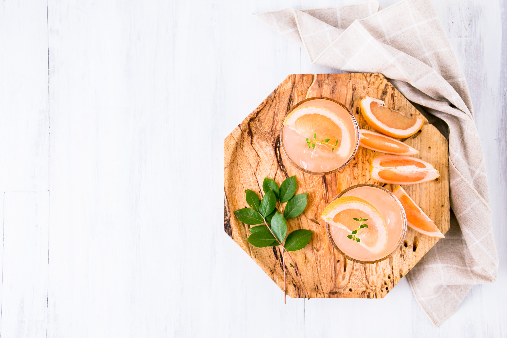

<div class="home-page">
  <div class="about">
    <pre>
 
         A cocktail drink is any mixed
         drink with at least two cocktail ingredients
              and is usually alcohol-based.
              Cocktails typically have a base liquor,
         like gin , tonic and mohebet.


             The Cocktail come with other flavored
              ingredients like fruit juice.
            Some drinks are simple and only
        involve two liquid ingredients.
            
            </pre
    >
  </div>
  
</div>
